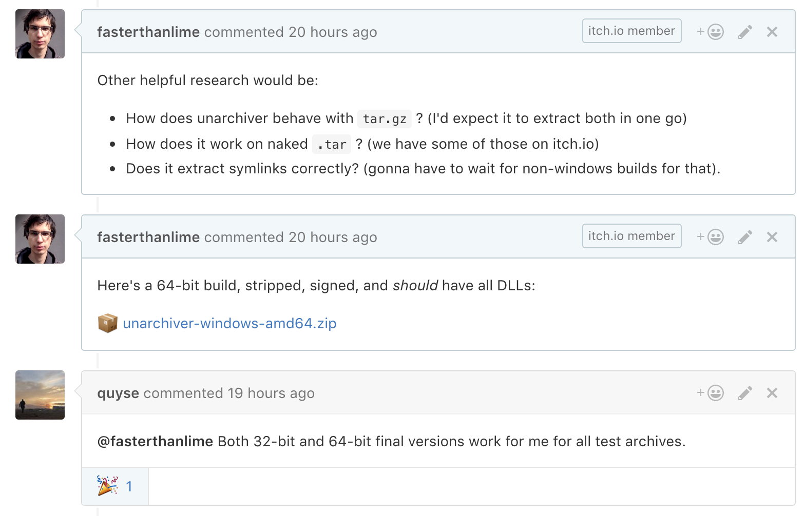
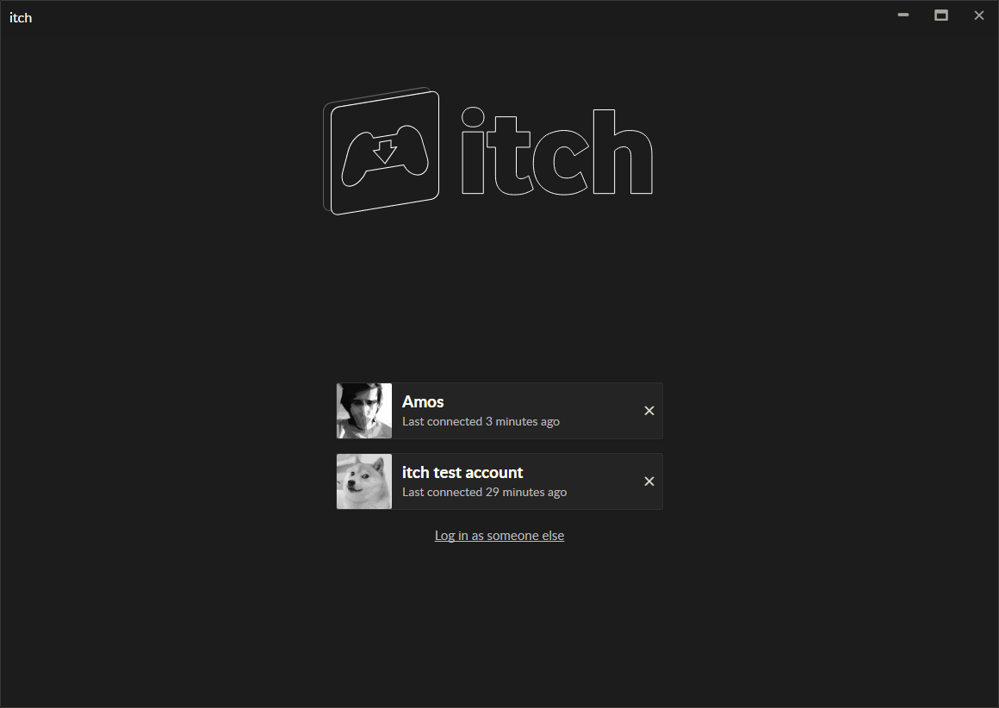

itch 用久了才发现的四个暗坑，我踩过两次才记牢
从扫描认领到多账户共享，itch 客户端有几处设计反直觉的地方，不提前知道的话轻则白折腾半小时，重则误删整个游戏库。
itch 客户端看着就是个游戏下载器，去itch官网就能找到它——登个号、点个安装、玩就行。但我用了快一年，发现它有几个地方是真的「坑」，不是 bug，是设计逻辑反着你平时的使用习惯，不提前有个心理预期，踩上去就是实打实的时间损失。
坑一：重装系统后游戏「消失」了，别急着重新下载
症状是这样的：重装完系统，游戏盘没动过，重新打开 itch，发现库里所有游戏都显示「未安装」，有的甚至直接从列表里消失了。第一反应肯定是——坏了，文件丢了？然后慌慌张张去各大平台搜安装包，忘了其实itch下载一直都在那儿，下完装完才发现，原来游戏一直躺在原来的目录里，itch 只是认不出来了。
原因说穿了很简单：itch 客户端有一个本地数据库，记录了哪些游戏装在哪个路径。重装系统或者换了个客户端，这个数据库就空了。游戏文件没丢，但 itch 不知道它们在那。它不会自动扫描硬盘，你得手动触发「扫描安装位置」这个功能。
解法就是两步走。先打开设置里的安装位置管理，找到你之前装游戏的那个盘，点扫描。等它跑完——大目录可能要几分钟——你会看到游戏一条一条回到库里，自动标记为已安装，连存档都在。但这里有个前置条件：这些游戏当初必须是 itch 客户端自己装的。如果你是手动解压进去的文件夹，扫描根本认不出来，得走另一条路「链接已有文件夹」，手动告诉 itch 这个目录对应哪个游戏条目。
我第一次踩这个坑的时候，以为扫描就能认所有东西，等了十分钟发现一半游戏没回来，又去手动重下了几个，折腾了快两小时。后来才回头翻itch文档看到这个限定条件——纯手动解压的，itch 没发认。

坑二：多账户下卸载游戏，全账户一起遭殃
这个坑是我朋友踩的。他在家里一台电脑上同时登了两个 itch 账号——一个自己的玩家号，一个帮家人代购的号。某天他想清理一下自己账号下的旧游戏，右键卸载了几个。结果家人那边登录自己账号一看，游戏也没了。
原因就在 itch 的账户隔离逻辑里。它把「账号数据」和「本地文件」分得很开：浏览记录、库条目、拥有权这些跟着账号走，但下载和安装的游戏文件是共享的，因为它们躺在本地磁盘上，属于这台机器的资产，不归任何一个账号所有。所以卸载操作删的是磁盘文件，你用 A 账号删了，B 账号那边自然也没了。
这个设计其实挺合理的——毕竟没必要让同一份文件占两次空间。但反直觉的地方就在于它太符合技术逻辑了，不符合用户直觉。大部分人会默认「我的账号下的东西我自己负责，跟别人没关系」，itch 偏偏不是这样。
解法有两个。要么在共用电脑上养成共识：谁也别轻易卸载，真要清理之前先确认其他账号有没有在用。要么配合沙盒机制，把不同账号的游戏隔离在各自的运行环境里——但这对普通用户来说门槛有点高，沙盒主要是拿来隔离来路不明的游戏用的。

坑三：安装位置选了同步盘，会产生诡异的文件锁
OneDrive、坚果云、百度网盘——很多人习惯把重要文件丢同步盘，包括游戏。itch 安装默认选在用户目录下，那个位置通常就在同步盘里。表面上没问题，装完也能玩，但过几天你会发现启动时偶发报错，或者自动更新时卡住不动。
原因是同步盘的文件锁机制。itch 客户端运行时会持续读写游戏文件和本地数据库，但同步盘客户端也在盯着这些文件，两边同时抢锁就会出问题——要么 itch 打不开文件，要么同步盘上传失败来回重试，把硬盘 I/O 占满。
解法也简单：装游戏之前，先在 itch 设置里添加一个纯本地路径作为安装位置，比如 D:\Games 或者专门分一个盘。别偷懒用默认位置，默认位置十有八九在同步盘覆盖范围内。而且位置可以事后调整，装错了也不怕，换了新位置之后走一遍扫描功能就能重新认领。
坑四：以为手动复制游戏目录过去就能用，结果启动器找不到
这个坑跟坑一是同一个根因，但表现不一样。有人在公司电脑装了 itch，在家也装了，想把家里玩的游戏拷到公司去——直接复制整个游戏文件夹过去，用文件管理器拖到公司电脑的 itch 安装目录下面。然后打开 itch，库列表里根本没有这个游戏，更别说启动了。
原因是 itch 的库条目和游戏目录不是一一对应的关系。每个游戏有自己独特的登记特征，包括目录结构里的特定文件、本地数据库里的路径记录、以及账号的拥有权校验。光复制文件夹过去，少了数据库那条记录，itch 根本不知道这个目录是「安装的游戏」还是「随便丢的文件夹」。
正确做法要么用扫描功能（前提是当初这游戏是 itch 客户端装的），要么用「链接已有文件夹」手动绑定——但后者也需要你在账号里本来就拥有这个游戏，否则即使绑上了也启动不了。
防坑清单
- 重装系统前记一下游戏安装目录，装完先扫目录别急着重下
- 共用电脑上别随便卸载，想清理先跟其他账号确认
- 安装位置选纯本地路径，别放同步盘
- 迁移游戏用扫描或链接功能，别手动复制文件夹
知道这些坑之后，这软件其实相当省心。itch 客户端的问题本质上都是「技术正确但用户意外」的设计，把几个反直觉的地方提前掰直了，日常用起来体验其实挺流畅的。整理这些踩坑经验时参考了社区资料，索引在GitHub、Gitee、GitCode都能找到。